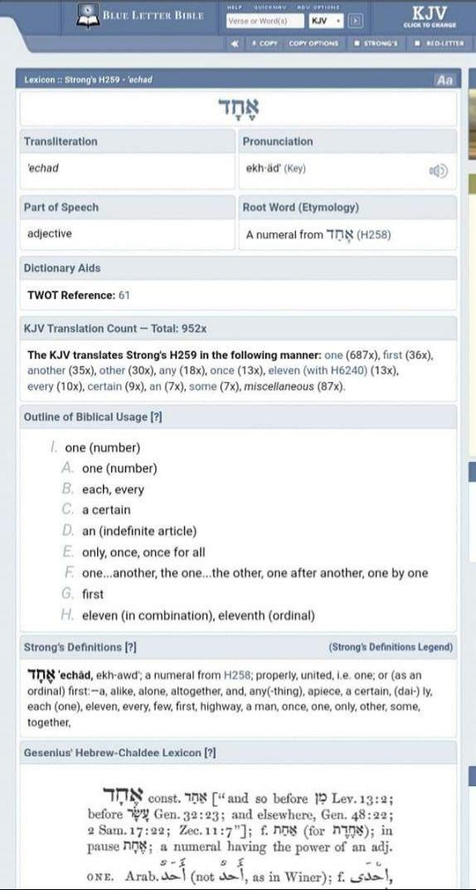
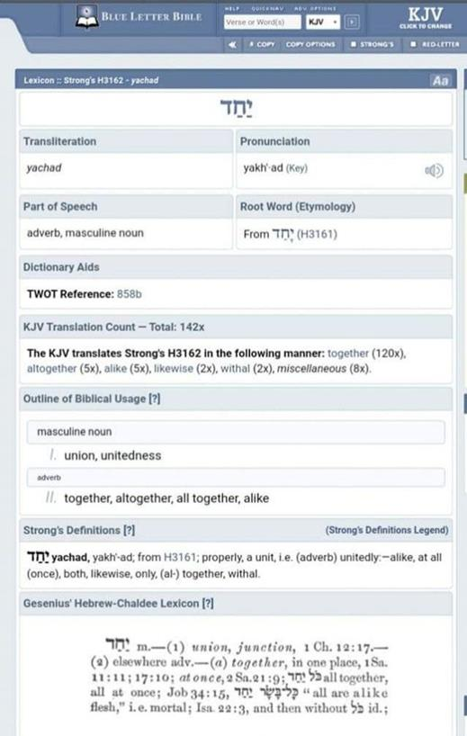
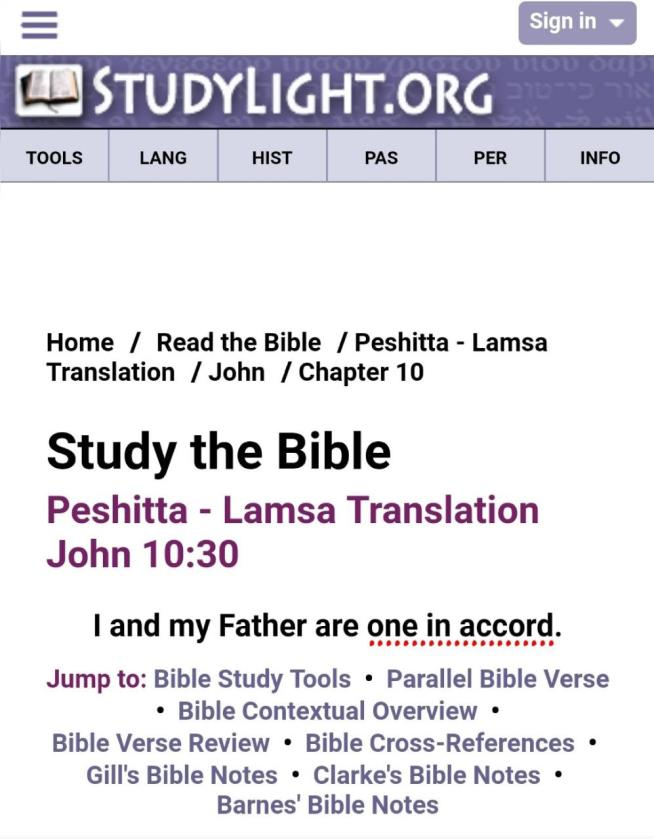

Please know the difference between ECHAD and YACHAD.

The Father יהוה is ECHAD - Shema Yisra'el יהוה is Echad (ONE)
Devarim/Deut 64“Hear, O Yisra’ěl: יהוה our Elohim, יהוה is One!
Yahushua testifies:
Marqos/Mark 12
29, יהושע answered him, “The first of all the commandments is: 'Hear, O Yisra’el, יהוה our Elohim, יהוה is One.
Yeshayahu/Isaiah 4514Thus said יהוה, “The labour of Mitsrayim and merchandise of Kush and of the Seḇaites, men of size, come over to you and they are yours. They walk behind you, they come over in chains, and they bow down to you. They make supplication to you, saying, ‘Indeed, Ěl is in you, and there is none else, no mighty one.’
15 ”Truly You are Ěl, who hide Yourself, O Elohim of Yisra’ĕl, Saviour!
18For thus said יהוה, Creator of the heavens, He is Elohim, Former of earth and its Maker, He established it, He did not create it to be empty, He formed it to be inhabited: “I am יהוה, and there is none else.
21“Declare and bring near, let them even take counsel together. Who has announced this from of old? Who has declared it from that time? Is it not I, יהוה? And there is no mighty one besides Me, a righteous Ěl and a Saviour, there is none besides Me. 22“Turn to Me and be saved, all you ends of the earth! For I am Ěl, and there is none else. 23“I have sworn by Myself, a word has gone out of My mouth in righteousness, and shall not return, so that to Me every knee shall bow, every tongue swear.
Does “Echad” mean “יהוה IS Yahushua”?

But יהושע the Messiah, is one in accord with Him (the Father יהוה) 'I and the Father are ONE (Yachad)'
Yocḥanan/John 1030“I and My Father are one.”
Yocḥanan/John 1720“And I do not pray for these alone, but also for those believing in Me through their word, so that they all might be one (Yachad), as You, Father, are in Me, and I in You, 21so that they too might be one (yachad) in Us, so that the world might believe that You have sent Me. 22“And the esteem which You gave Me I have given them, so that they might be one as We are one, 23“I in them, and You in Me, so that they might be perfected into one, so that the world knows that You have sent Me, and have loved them as You have loved Me.
26“And I have made Your Name known to them, and shall make it known, so that the love with which You loved Me might be in them, and I in them.”
As we’ve seen above that Yahushua did claim to be “one” with יהוה.
The main issue here is whether the person intended to say "echad" or "yachad". In the Brit Chadashah/New Testament, when Yahushua stated "I and the Father are one", he clarified his intended meaning later in the same book as "yachad" and not "echad". Yachad signifies a state of unity or oneness, while echad denotes exclusivity or singularity= “the only One”.
The idea of "one" in relation to Yahushua and יהוה (and all of us) can be summarized as a unified family or collective. Yahushua claimed to be in unity with יהוה, but we solely possess the Greek translation and lack the original Hebrew version to determine the specific meaning. Thus, it is best to allow Yahushua himself to clarify the intended definition. Did he believe he was one with יהוה. In a subsequent section of the book, Yahushua provided a precise explanation of his earlier statement, as he believed in the consistent interpretation of Scripture. He emphasized that our unity stems from our covenant, which encompasses our thoughts, intentions, goals, essence, and connection as a family. He is the paternal figure in our lives, we are His offspring, and Yahushua serves as our sibling. We are all YACHAD with יהוה not Echad.
Yochanan/John 17:19-21 "And for their sakes I sanctify myself (as a Son in Covenant with יהוה), that they also might be sanctified through the truth (that by entering into a Marriage Covenant with me, they will become Children of יהוה by Law, Yochanan/John 1:12). Neither pray I for these alone, but for them also which shall believe on me through their word (confess that Yahushua is our Messiah, our Mediating High Priest, our elder Brother in Resurrection order, our Bridegroom through Marriage); That they all may be one (Family as Children of יהוה); as Thou, Father, art in (an Adoption Covenant with) me (through Resurrection to become my Father), and I in (Covenant with) thee (to become Your Firstborn from the dead, SON), that they also may be one (Family) in (Covenant with) us: that the world may believe that Thou hast sent me (in Fulfillment of The Heavenly Scroll, where Yahushua was given Glory as coming King with יהוה in The Beginning)." Ib’rim/Hebrews 10 7 Then I said, 'Here I am--it is written about me in the Heavenly Scroll-- I have come to do Your Will, my God (יהוה is Yahushua’s “God” too!) Mattithyahu/Matthew 6:10 10 Your Kingdom come, Your Will be done, on Earth as it is (written) in (the) Heaven(ly Scroll).
So, by Yahushua’s own definition, “One” is through Covenant!
